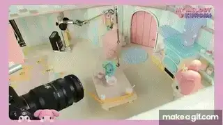
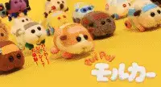
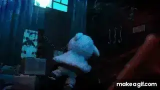
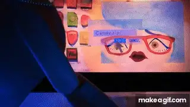

Vol.13 / System Analysis
PUI PUI モルカー：
羊毛フェルトが織りなす社会派寓話
2026.02.12 UP
・作者経歴：見里朝希（Tomoki Misato）
1992年、東京都生まれ。武蔵野美術大学造形学部を卒業後、東京藝術大学大学院にてストップモーション・アニメーション界の巨匠、伊藤有壱教授に師事しました。
大学院の修了制作として発表した『マイリトルゴート』が国内外で多数の映画賞を総なめにし、若くしてストップモーション界のフロントランナーとなりました。 彼のスタイルは、羊毛フェルトの「温かみ」を、ブラックユーモアや鋭い社会風刺という「冷徹な視点」で裏切る点にあり、そのギャップが中毒性を生んでいます。
・代表作紹介（STRUCTURAL DATA）
Netflixシリーズ『My Melody & Kuromi』 (2025)

制作: WIT STUDIO
見里朝希監督がWIT STUDIOで手掛ける最新ストップモーション・プロジェクト。
PUI PUI モルカー (2021)

モルモットが車になった世界の日常を描く。最大の特徴は、実写の人間をコマ撮りする「ピクセレーション」と、羊毛フェルトを組み合わせたハイブリッド構造。 一見子供向けだが、内容は「渋滞のイライラ」「強盗」「環境問題」など、人間の愚かさをドライに描く大人向けの寓話。
マイリトルゴート (2018)

グリム童話『オオカミと七匹の子ヤギ』のその後を描いたダークファンタジー。羊毛フェルトの質感が、かえって「肉体」や「痛み」を生々しく強調。 児童虐待という重いテーマをメタフォリカルに表現した、見里監督の「作家性」が最も濃縮された傑作。
▶ YouTube: マイリトルゴートCandy.zip (2017)

大学時代の作品。オフィスを舞台に、女性が食べた飴が引き起こす身体変容をコミカルに描く。 「飴（無機物）」を「圧縮（zip）」するというタイトル通り、限られた空間でのメタモルフォーゼ演出が見事。モルカーに至る生命感の原点。
▶ YouTube: Candy.zip・技術や特徴：ENGINEERING ASPECTS
ストップモーションは、1秒間に24枚（または12枚）の静止画を撮影し、それを連続させることで「命」を吹き込む工程です。
- 🔹 置換（Replacement）: 口のパーツや表情をコマごとに「取り替える」ことで、有機的な表情変化を生み出す。
- 🔹 サウンド設計: 声優を起用せず、本物のモルモットの声をサンプリング。この「非言語的な可愛さ」が言語の壁を越えた。
- 🔹 ピクセレーション: 背景のドライバー（人間）を一コマずつ動かして撮ることで、独特の不気味さとユーモアを演出。
・今後の予定：FUTURE PIPELINE
見里監督は現在、WIT STUDIOにてストップモーション・アニメーション部門の統括として後進の育成にも関わっています。 2024年11月には、CGとのハイブリッドではない「完全新作」の長編映画（『PUI PUI モルカー ザ・ムービー MOLMAX』）が公開されるなど、その制作工程はさらに高度化・大規模化しており、世界的なスタジオ（AardmanやLAIKA）に肩を並べる存在になりつつあります。